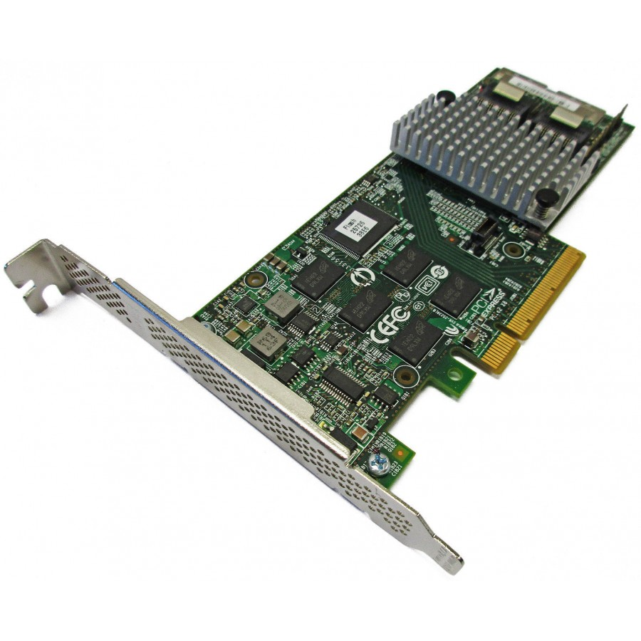

BytesOfProgress
Wiki
RAID - Redundant Array of Independent Disks
MegaRAID
RAID, or Redundant Array of Independent Disks (previously called "redundant array of inexpensive disks"), is a storage technology that combines multiple physical disk drives into a single logical unit for the purpose of data redundancy, performance improvement, or both. There are several RAID levels, each with its own configuration and benefits.
In a RAID array, data is distributed or replicated across the member drives according to the chosen RAID level. The two primary categories of RAID configurations are mirroring and striping.
Hardware / Software RAID
Hardware RAID
In hardware RAID, a special controller takes care of the RAID tasks, and it's often part of the storage system. This controller has its own processing power, which can make it faster, but it can also be more expensive. This is what a hardware RAID controller looks like:
Setting up hardware RAID is done through a dedicated interface or tool from the RAID controller, similar to accessing the BIOS. When it comes to moving RAID configurations to a different system, hardware RAID can be trickier because it depends on a specific RAID controller.
Software RAID
Software RAID is generally more flexible and can be moved between systems with compatible software support. Software RAID is managed directly through the operating system.
Unlike hardware RAID, which has its dedicated processor, software RAID uses the computer's CPU and RAM for RAID calculations. While this may cause a slight overhead, modern CPUs are mostly powerful enough to handle these tasks efficiently.
Software RAID configurations can be easily adjusted and managed through the operating system's tools. This flexibility allows users to create, modify, or delete RAID arrays without the need for specialized hardware or additional components.
One of the primary advantages of software RAID is its cost-effectiveness. Since it relies on the existing resources of the host system, there is no need for a separate RAID controller, making it a more budget-friendly solution.
RAID Levels
Each RAID level serves different purposes in terms of performance, redundancy, and capacity. Here are some common RAID levels:
RAID 0 (Striping)
RAID 0 provides improved performance by striping data across two or more drives. However, it offers no redundancy. If one drive fails, all data is lost. RAID 0 is suitable for applications where performance is a priority, and data redundancy is not critical.
RAID 1 (Mirroring)
RAID 1 involves mirroring data across two drives. Both drives contain the same information, providing redundancy. If one drive fails, the data is still available on the mirrored drive. RAID 1 is primarily used for data protection rather than performance improvement.
RAID 5 (Striping with Distributed Parity)
RAID 5 combines striping with distributed parity, meaning that parity information is distributed across all drives. If one drive fails, the parity information can be used to reconstruct the data on a replacement drive. RAID 5 offers a balance between performance and redundancy.
RAID 6 (Striping with Dual Parity)
RAID 6 is an extension of RAID 5, featuring dual distributed parity. This allows the array to tolerate the failure of two drives simultaneously. RAID 6 provides increased fault tolerance but may have a higher write overhead compared to RAID 5.
RAID 10 (Striping and Mirroring)
RAID 10 combines the features of RAID 0 and RAID 1. It involves both striping and mirroring, providing both improved performance and redundancy. Data is striped across mirrored pairs of drives. RAID 10 offers high fault tolerance but requires a larger number of drives compared to other RAID levels.
RAID 50 (Combination of RAID 5 Arrays)
RAID 50 combines multiple RAID 5 arrays into a single RAID 0 array. This provides the performance benefits of striping in RAID 0 along with the distributed parity of RAID 5. RAID 50 is suitable for applications that require both performance and redundancy.
RAID 60 (Combination of RAID 6 Arrays)
RAID 60 is similar to RAID 50 but uses RAID 6 arrays instead of RAID 5. This enhances fault tolerance by incorporating dual distributed parity. RAID 60 is suitable for environments that demand high reliability and performance.
Each RAID level has its own advantages and trade-offs, and the choice depends on the specific requirements of the application, including considerations for performance, data protection, and available storage capacity.
back